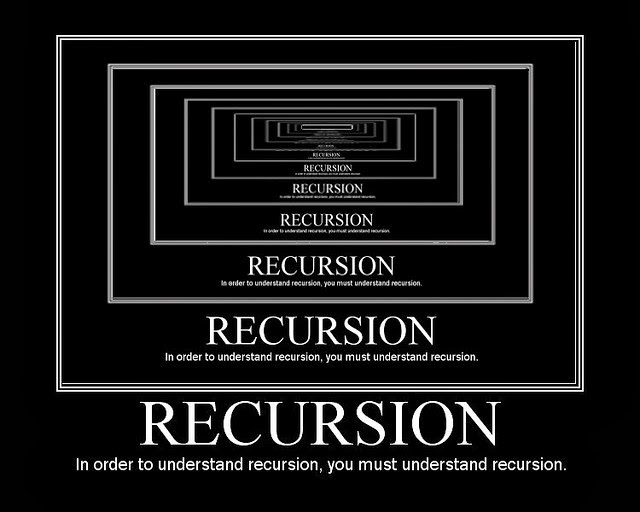

If you put two mirrors parallel to each other, the reflections seem to continue forever. As the light bounces from one surface to the other and back again, the reflected images repeat and repeat. Ever play with a Matryoshka doll, those painted nesting Russian dolls that contain smaller and versions of themselves? These are two handy visual metaphors for how recursion works in programming. A recursive function means applying a function as a part of the definition of that same function. It's confusing in the same way walking down a mirrored hallway can be a bit disorienting. To restate, a recursive function is a function that calls itself.
When looking at any programming challenge, the first step is usually to try and break down the problem into smaller problems of roughly the same type. A "Divide and Conquer Algorithm" splits a problem into two or more sub-problems of the same type, until these become simple enough to be solved directly. The solutions to all of the smaller, simpler problems are combined to get the solution to the "big" problem. The Bastards Book of Ruby has an interesting allegory that shows how this division of labor can be used to solve a real-world problem.
Let's say you have a pile of 100 very large rocks. You want to find the heaviest of these rocks. As you start lifting each of the rocks to determine their weight, you realize that your back is already aching. There's no way you'll get through lifting all 100 of these stones, let alone be able to remember which one was the heaviest! You split the stones into 2 groups of 50, and recruit two assistants to go through the two groups of 50 stones, select the heaviest, and roll them to you where you will only have to lift two stones to see which is the heaviest of all 100. Division of labor! You are very clever! But your two assistants are also clever, they hire two assistants each, splitting their 50 stones further into 4 groups of 25. Now, 25 stones is still an awful lot of lifting, so those 4 assistants hire assistants of their own, who hire assistants, who hire still more assistants, until each person only has lift and judge the weight of 2 stones and then pass the heavier one to the next person up the chain of command until it reaches you, the big boss.
Here we'll look at an example of creating a factorial method in Ruby that uses recursion. Notice how the factorial method is called within itself. A factorial is the product of an integer and all the integers below it, for example, factorial four (4*3*2*1)is equal to 24. Using our divide and conquer recursive method, we break up our problem into smaller pieces. Here instead of multiplying all the integers smaller than our number, we do two at a time.
def factorial(number)
if n == 0
1
else
n * factorial(n-1)
end
puts factorial(5)
Let's think back to those Russian Matryoshka dolls. As you open each doll, there is a smaller one inside. Eventually you will come to the smallest doll. This doll doesn't open because you've gone down to the smallest piece. Here we have an apt metaphor for our "Base Case", our end goal, the point in the recursive function where we tell the program to STOP. In recursive functions there must be a terminating condition or it will go on FOREVER. This can be bad news for a computer.
Recursion, even when it isn't stuck in an infinite loop, can be pretty memory hungry. Sometimes a simple loop can actually be faster. For example, using recursion to calculate a Fibonacci number can split the problem into so many different pieces that it becomes a memory-suck.
def fibonacci(number)
return number ifn <= 1
fibonacci( number - 1 ) + fibonacci( number - 2 )
end
puts fibonacci(5)
The code looks straightforward enough, but what is it actually doing? We're splitting the problem into two branches, and then splitting those branches again until we get to 1. Using our fibonacci method for the number 5 is fine, but what if we entered 100? Memory would have to be allocated to split and re-split those branches, and then add them all up to get the solution. This is an example of a problem better solved by using a loop method.